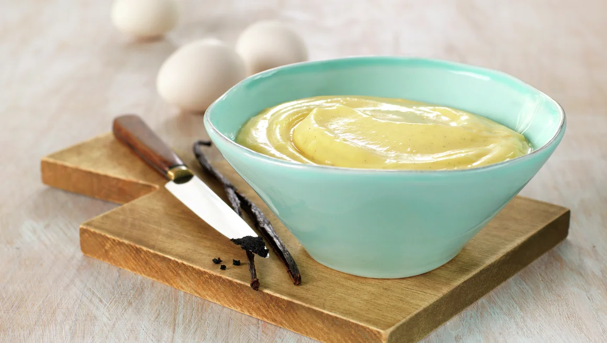

Pastry Cream

Vanilla pastry cream
250 mlheavy cream250 mlwhole milk100 gsugar1vanilla bean (or vanilla sugar/extract)35 gcorn starch4egg yolks
Add 200 ml milk, cream and the sugar into a saucepan. Make sure there’s enough space and that the pan is not more than half full.
Split the vanilla bean (or use 2 tsp vanilla extract) and add the seeds with the bean into the pot.
Warm it slowly to boiling point. In a separate bowl add the remaining 50 ml of milk with the corn starch and mix together. Mix in the egg yolks.
Add ⅔ of the warm liquid into the bowl with the egg liquid, a little at a time. Mix thoroughly the whole time.
Sift it back into the pot, and let it soft boil while constantly stirring so it doesn’t burn in the bottom.
Once it’s started to thicken, add it to a shallow plate and cover with saran wrap (touching the custard).
Store in fridge to cool down. Mix the custard before using it.